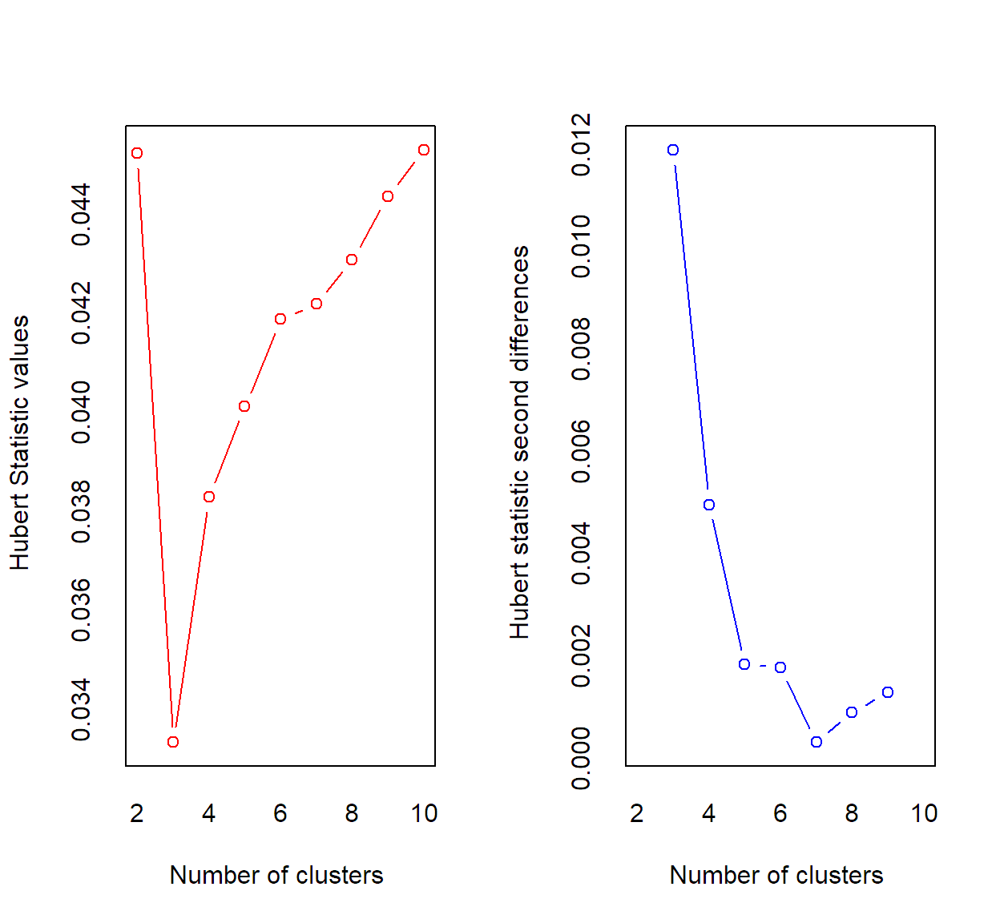
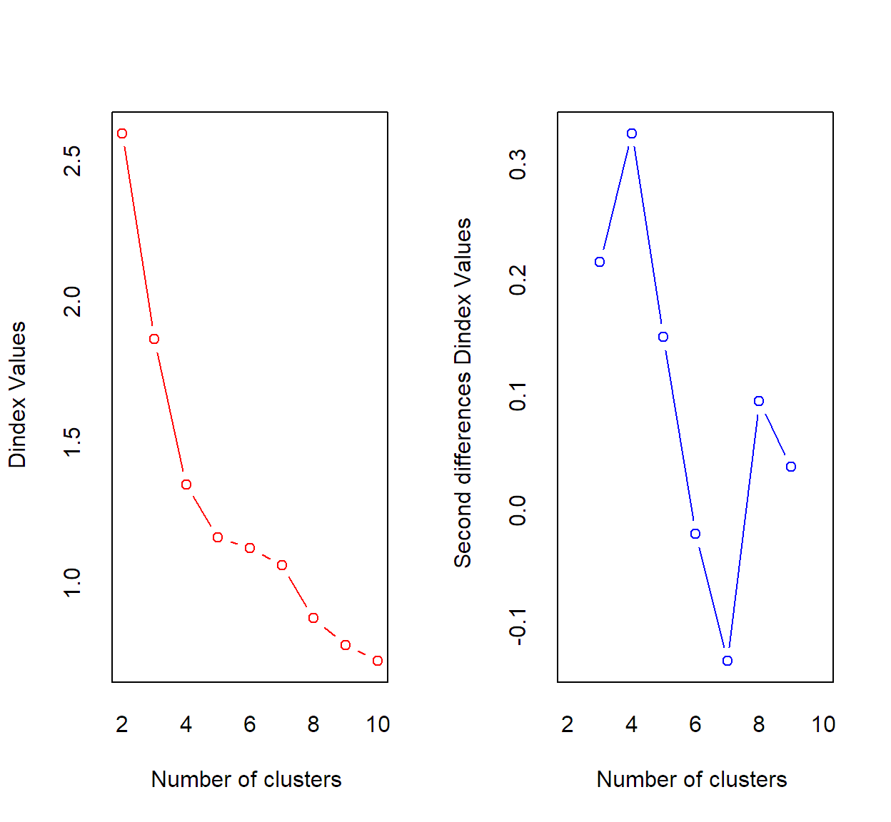
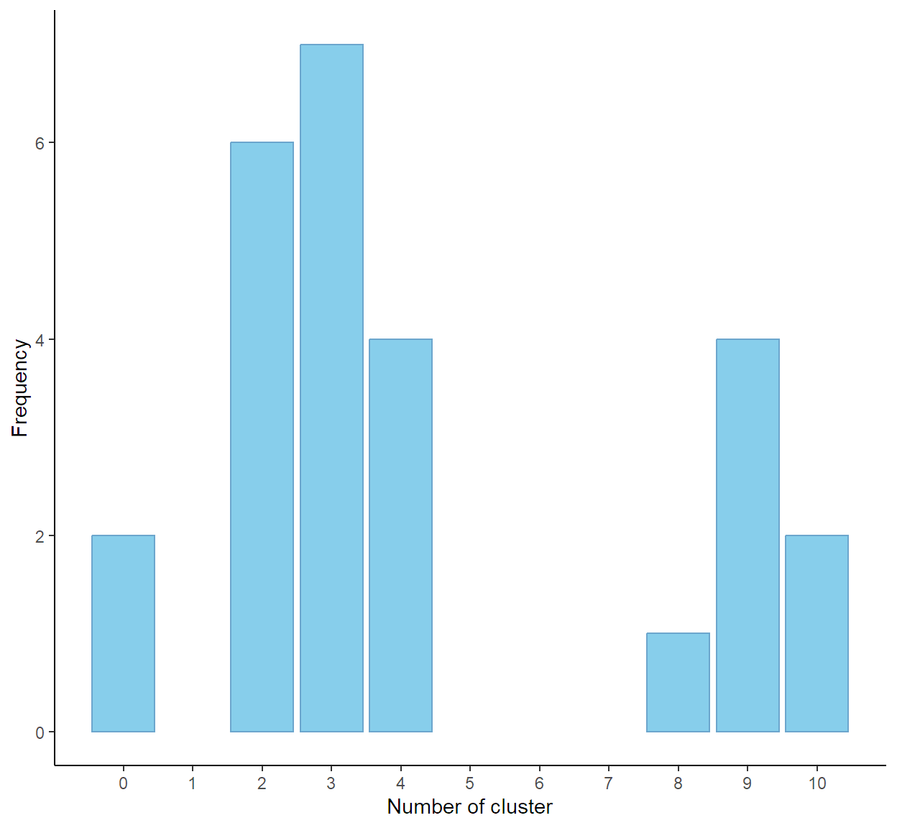

El análisis clúster es un método estadístico multivariante de clasificación automática no supervisada a partir de una matriz de Observaciones-variables, en grupos homogéneos, conglomerados o clústeres, no conocidos de antemano pero sugeridos, en función de las distancias entre los puntos de datos, para obtener una mayor comprensión de los datos ó porcesarlos de manera más eficiente. (Fuente: Shimodaira, H. (2020). Clustering and Visualisation of Data. Ed.ac.uk)
Hay dos enfoques principales para el agrupamiento: jerárquico y particional ó no Jerárquicos. El agrupamiento jerárquico forma un árbol de clústeres anidados en el que, en cada nivel del árbol, un clúster es la unión de sus hijos. El agrupamiento particional ó no Jerárquico no tiene una estructura anidada o jerárquica, simplemente divide el conjunto de datos en un número fijo de grupos que no se superponen, con cada punto de datos asignado a exactamente un grupo. El algoritmo de agrupamiento particional más empleado, el agrupamiento K-means.
1.0.2 Objetivos del análisis
Modo Q. Agrupar elementos en grupos homogéneos en función de las similitudes o similaridades entre ellos.
Modo R. Dividir las variables en grupos para plantear modelos formales y reducir la dimensión.
1.0.3 Consideraciones para aplicar el análisis a una matriz de datos básica.
Para poder aplicar el análisis de importante:
Verificar si el conjunto de datos no se encuentra correlacionado.
Escoger de una medida de distancia propiada.
Verificar la tendencia de agrupamiento del conjunto.
Ephemeroptera_In_R. Contiene la información sobre la abundancia de 11 especies del orden Ephemeroptera y 10 variables ambientales en 6 sitios de muestreo en dos estaciones sp (primavera), wi (invierno).
Diatom: Contiene la información de la presencia/ausencia de diferentes especies de diatomeas de la familia Gomphonemataceae de plantas en 193 muestras de piedras recolectadas durante los meses de junio a septiembre de 1998 en diferentes ríos y arroyos franceses por parte del Cemagref y el Centre de Recherche Gabriel Lippman, los cuales posteriormente se analizaron los biofilm.
Alpes_Sp_Rasgos: Las matrices en el archivo de Excel hacen parte del trabajo realizado por Choler en el 2005 y retomado por Dray et al en el 2014, donde el área de estudio comprendió 75 sitios de muestreo repartidos en dos hectáreas entre 2700 m y 2750 m de elevación sobre el suroeste de los Alpes europeo (Lieu ‐ dit Aravo, Commune de Valloire, Francia; 45.067 ° N, 6.394 ° E). La información que se presenta corresponde a 8 rasgos funcionales de la composición de plantas vasculares descrita por especie.
Para ejemplificar usaremos la base de datos “Teeth” que contiene la información del número total de dientes de 66 mamíferos tanto en la mandíbula superior como en la inferior para cuatro grupos de acuerdo con funciones especializadas en, incisivos, caninos, premolares y molares. Esta información es de utilidad para proporciona una simple base numérica de clasificación de los mamíferos rastreando los cambios evolutivos.
Tabla 1.
Descripción de las variables
Variables
Unidad de medición
name
ID del mamífero.
top.i
N° de dientes incisivos en la mandíbula superior.
bottom.i
N° de dientes incisivos en la mandíbula inferior.
top.c
N° de dientes caninos en la mandíbula superior.
bottom.c
N° de dientes caninos en la mandíbula inferior.
top.pm
N° de dientes premolares en la mandíbula superior.
bottom.pm
N° de dientes premolares en la mandíbula inferior.
top.m
N° de dientes molares en la mandíbula superior.
bottom.m
N° de dientes molares en la mandíbula inferior.
Cargaremos los datos en el ambiente de RStudio y luego cambiemos la naturaleza del objeto usando la función "as.data.frame()". Seguidamente le daremos etiquetas a las UE usando la función "row.names()" las cuales se ubican en la columna 1 de la matriz de datos básica bajo el nombre de name.
4.3.1 Verificar si el conjunto de datos no se encuentra correlacionado.
Para verificar si el conjunto de datos no se encuentra correlacionado usamos el test de esfericidad de Bartlett.
RECUERDE. Siempre que se análiza la matriz de correlación se verifica la normalidad multivariante porque para construirla se definir el coeficiente de correlación apropiado en el argumento "method"
Code
mvn(data = A,mvnTest ="mardia")$multivariateNormality[1:2,]%>%kable(format ="html",caption ="Tabla 1. Verificación de la normalidad multivariante") %>%kable_classic(full_width = F)
Tabla 1. Verificación de la normalidad multivariante
No posible verificar que el conjunto de datos no se encuentra correlacionado ya que test de esfericidad de Bartlett reflejo que hay evidencia suficiente de correlaciones significativas entre más de dos pares de variables, 𝜒²(28)=432.85 , p<0.05. Por lo que hay que considerar un coeficiente que tenga en cuenta tales correlaciones o pasar los datos por un análisis de componenetes principales previamente.
4.3.2 Escoger de una medida de distancia propiada.
Usaremos la medida de distancia de Bray y útil para encontrar similitudes entre UE cuando el conjunto de variables son cuantitativas discretas de conteo, también se podría emplear la medida de distancia basada en correlaciones, en nuestro caso de Kendall.
4.3.3 Verificar la tendencia de agrupamiento del conjunto.
La evaluación de la tendencia de agrupacmiento se puede hacer con métodos numéricos usando el Estadístico de Hopkins - (\(H\)) ó métodos visuales usando gráficos de mapa de calor ó el biplot de los UE.
El Estadístico Hopkins(Lawson y Jurs 1990): Mide la fiabilidad en base a la probabilidad de que un conjunto de datos dado sea generado por una distribución de datos uniforme.En otras palabras, prueba la aleatoriedad espacial de los datos.
\(H_0:\) el conjunto de datos se distribuye uniformemente (es decir, no hay agrupaciones significativas).
\(H_1:\) el conjunto de datos no está distribuido uniformemente (es decir, hay agrupaciones significativas).
Para su interpretación se toma como umbral un valor de 0.5 no rechazando la hipótesis nula si la estadística de Hopkins (H) es menor 0.5; en tal caso es poco probable que la matriz tenga grupos estadísticamente significativos; de lo contrario si el valor de la estadística de Hopkins está cerca de 1, entonces podemos rechazar la hipótesis nula y concluir que el conjunto de datos es significativamente agrupable.
Calularemos el estadístico de Hopkins usando la función "get_clust_tendency()" indicando primero la matriz de datos, seguido de los grados del libertad (n-1).
Code
get_clust_tendency(A,n =nrow(A)-1,graph = F)
$hopkins_stat
[1] 0.7565377
$plot
NULL
Se puede ver que el conjunto de datos es altamente agrupable, (\(H =0.76 > 0.5\)).
Para la evaluación visual de la tendencia de agrupamiento se requiere primero calcular la matriz de disimilitud entre observaciones usando la función "vegdist()" y luego se gráfica con la función "fviz_dist()" El nivel de color es proporcional al valor de la diferencia entre las observaciones en rojo tienen alta similitud (es decir, baja disimilitud) y en azul tienen similitud baja. Objetos pertenecientes al mismo grupo se muestran en orden consecutivo.
Existen diferentes métodos de agrupación de datos, que incluyen enfoques de agrupamiento de particiones (no jerárquico) y enfoques de agrupamiento jerárquico. Elegir el mejor método de agrupación puede resultar una tarea difícil para el analista. La función "clValid()" se puede utilizar para comparar simultáneamente múltiples algoritmos de agrupación y así identificar el mejor enfoque de agrupación. La función emplea para la compración medidas de validación internas, que utilizan la información intrínseca en los datos para evaluar la calidad de la agrupación, y las medidas de estabilidad que evalúan la consistencia de un resultado de agrupación comparándolo con las agrupaciones obtenidas después de eliminar cada columna, una a la vez.
Nota. En la práctica se suele emplear el algoritmo no jerárquico cuando se tienen muchos datos agrupar y el jerárquico cuando no.
4.4.1 Paso 2.1. Defina el método de agrupación en caso de cluster Jerárquico.
Cuando trabajamos con métodos jerárquicos se puede escoger entre varios métodos de agrupación. Para determinar cual es el mejor método se valida la estructura que proporciona el método jerárquico de que se trate al analizar la correlación entre la matriz de distancias original y la denominada matriz cofenética del método en cuestión. Con este coeficiente cofenético se mide la similitud entre las distancias iniciales (obtenidas a partir de los datos originales) y las distancias finales con las cuales los individuos se han unido durante el desarrollo del método jerárquico (matriz cofenética). Valores de la correlación altos (cercanos o iguales a la unidad) indican que es válida la agrupación realizada. (Fuente: https://www.um.es/estadempresa/multivarianteR/CLUS/resumen_CLUS.html)
Tabla 4. Correlaciones cofenéticas por método de agrupación jerárquica
Método de agrupación
Correlación cofenética
ward.D
0.7432
single
0.6905
complete
0.7600
average
0.8431
mcquitty
0.7794
median
0.8094
centroid
0.8430
De acuerdo con la información anterior el mejor método de agrupamiento es average, (\(r = 0.8431\)).
4.5 Paso 3. Defina el número óptimo de grupos a formar.
Existen más de treinta índices y métodos que se han publicado para identificar el número óptimo de conglomerados, para hacer uso de ellos emplearemos la función "NbClust()" con el fin de decidir el mejor número de grupos utilizando la “regla de la mayoría”. Tambien se puede emplear un solo indice siendo el más usado en la práctica la amplitud de silueta, dónde el número óptimo de grupos a formar es aquel que máximice el valor del índice.
Code
#Para Kmeans - no Jerárquico Todos los índices.res.nbclust<-NbClust(A, diss = dist1,distance =NULL,min.nc =2, max.nc =10, method ="kmeans",index ="all")

*** : The Hubert index is a graphical method of determining the number of clusters.
In the plot of Hubert index, we seek a significant knee that corresponds to a
significant increase of the value of the measure i.e the significant peak in Hubert
index second differences plot.

*** : The D index is a graphical method of determining the number of clusters.
In the plot of D index, we seek a significant knee (the significant peak in Dindex
second differences plot) that corresponds to a significant increase of the value of
the measure.
*******************************************************************
* Among all indices:
* 6 proposed 2 as the best number of clusters
* 7 proposed 3 as the best number of clusters
* 4 proposed 4 as the best number of clusters
* 1 proposed 8 as the best number of clusters
* 4 proposed 9 as the best number of clusters
* 2 proposed 10 as the best number of clusters
***** Conclusion *****
* According to the majority rule, the best number of clusters is 3
*******************************************************************
Code
ggplot(data =data.frame(t(res.nbclust$Best.nc)),mapping =aes(x=Number_clusters))+geom_bar(boundary=1,fill="skyblue",color="skyblue3")+scale_x_continuous(n.breaks =10)+theme_classic()+labs(x="Number of cluster", y="Frequency")

Code
#Para Kmeans - no Jerárquico amplitud de silueta.n1<-NbClust(A, diss = dist1,distance =NULL,min.nc =2, max.nc =10, method ="kmeans",index ="silhouette")ggplot(data =data.frame(K=c(2:10),Value=n1$All.index),mapping =aes(x=K,y=Value))+geom_line(boundary=1,lwd=1,color="skyblue3")+geom_point(pch=21,size=3,fill="skyblue")+scale_x_continuous(n.breaks =10)+theme_classic()+labs(x="Number of cluster", y="Value index")
Para el algoritmo kmeans el número de grupos a formar sugeridos es 3 bajo el criterio de la mayoria. Para el algoritmo jerárquico de average el número de grupos a formar sugeridos es 8.
4.6 Paso 4. Ejecute el algoritmo, y represente y describa las agrupaciones.
Para ejecutar el algoritmo de kmeans y representarlo se usa la función "eclust()" que permite ejecutar el algoritmo de forma directa, donde el argumento "FUNcluster" se emplea para indicar si el método no jerárquico (“kmeans”, “pam”, “clara”) y la función "hclust()" para para ejecutar el algoritmo jerárquico a partir de la matriz de distancia (Como se uso en paso anterior). La función "fviz_dend()" muestra el dendograma para agrupaciones jerárquicas y la función "fviz_cluster()" muestra las garupaciones no jerárquicas en un plano de dimensiones reducidas.La función "fviz_silhouette()" evalua si las observaciones quedaron bien clasificadas (con valores positivos).
Replique a manera de práctica el análisis de clúster usando la matriz de datos básica “Milks” que contiene información de la composición de la leche en términos de porcentaje de agua, proteínas, grasas y lactosa de 16 mamíferos.
A partir del análisis responda a:
¿qué requerimientos se pudieron verificar?
¿es posible encontrar grupos homogéneo internamente entre las UE de la matriz? ¿usando que medida de distancia?
¿qué algoritmo de agrupación es el apropiado para el conjunto?
¿cuál es el número óptimo de clúster?
¿qué característica tienen en común las UE de cada grupo?¿alguna UE se encuentra mal clasificada?.